THREAD
INTELLIGENCE
VIRTUAL APPAREL MANUFACTURING // EST. 2016
Engineered fashion supply chains serving USA, UK, European, and Australian retailers. Delivering design-driven, fully audited garments from Dhaka, Bangladesh.
APPROVED CLIENT PORTFOLIO // RETAIL NETWORKS
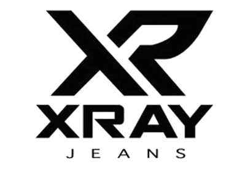

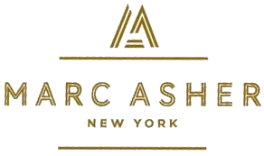
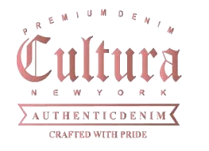
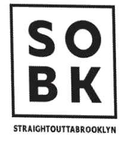
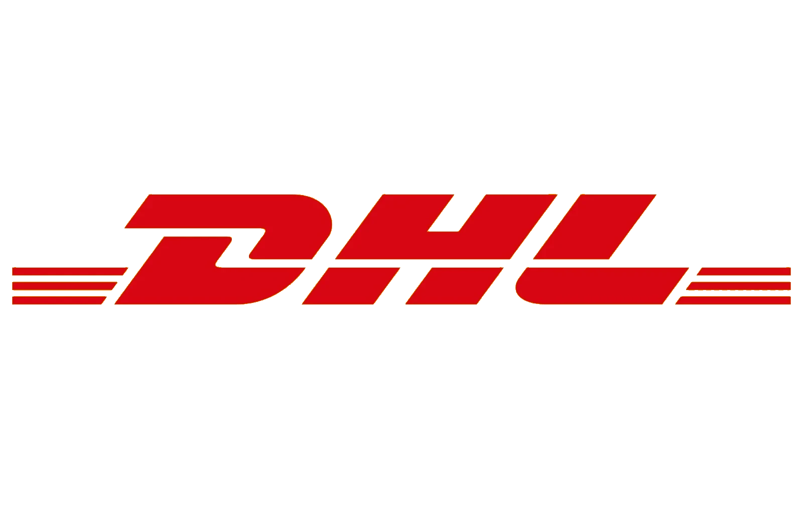
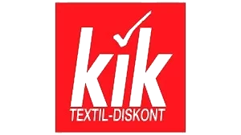
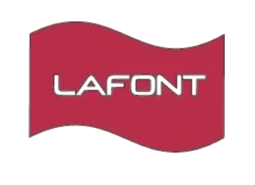
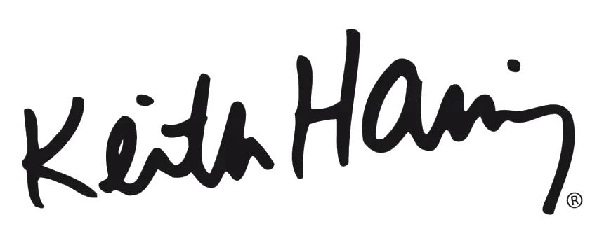
OUR ORIGIN
Founded in Dhaka in 2016, TØJ Sourcing bridges the gap between raw production reality and global retail sophistication. We operate as virtual manufacturers, combining technical mastery with fluid logistics.
Dhaka expertise, global scale.
TØJ Sourcing was established to provide global clothing brands with a direct, secure, and transparent channel to the manufacturing prowess of Bangladesh. Recognizing that traditional brokerage was riddled with opacity and delays, we set out to build a virtual manufacturing interface driven by rigorous technology.
By combining design and R&D shells across New York, London, Barcelona, and Dubai, with showrooms in Dhaka and London, and an expansive production network spanning key hubs like Bangladesh, China, Italy, Spain, UK, USA, and Australia, we manage the entire lifecycle of apparel sourcing. We speak the language of creative directors, sourcing managers, and factory owners alike.
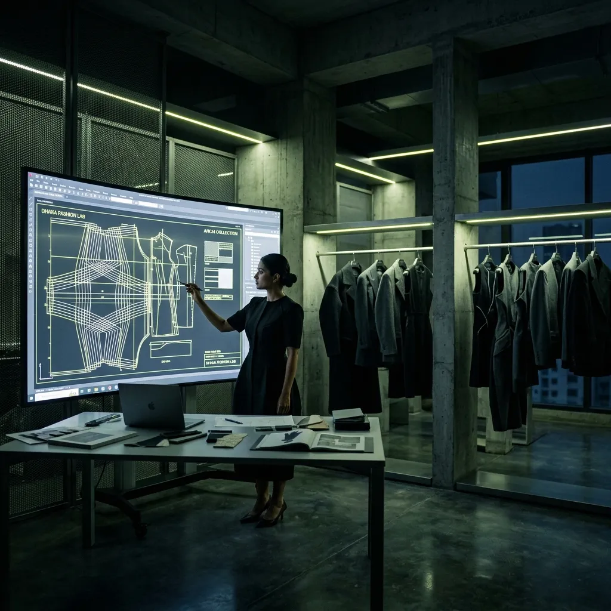
“Modern retail waits for no supply chain. Agility is the ultimate currency.”
— SHAMIM AL-MAMUN, Managing Director
MILESTONES TIMELINE
Company Foundation
TØJ Sourcing is incorporated in Dhaka with 3 partner factories, serving 2 boutique retail accounts in the United Kingdom.
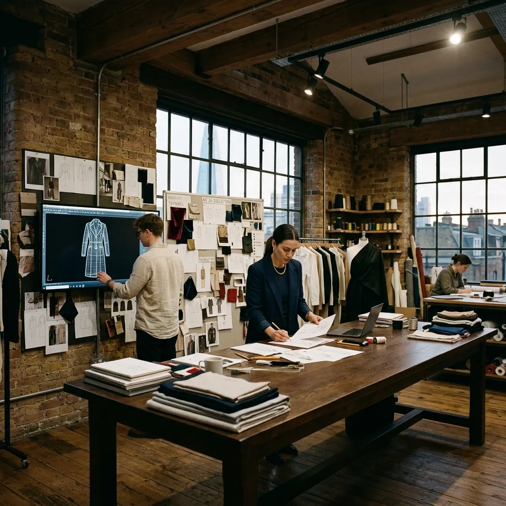
London Design Agency
Established a permanent design-led R&D agency in London, offering CAD modeling and custom range planning closer to retail creatives.
Southern Europe & Barcelona Shells
Opened our Barcelona design shell and expanded high-end production partnerships across Spain and premium outerwear ateliers in Italy.
USD 45M Capacity Milestone
Annual capacity reaches 28 million pieces across knitwear, woven, and denim divisions, serving 25+ global brands.
SERVICE PILLARS
TØJ SOURCING manages the entire clothing supply chain lifecycle, structuring raw sourcing reality through four dedicated vertical shells.
| Pillar Shell | Core Responsibilities | Client Input Required | Deliverables / Outputs |
|---|---|---|---|
| 01 // Research & Development | Yarn composition engineering, raw fabric cataloging, eco-alternative chemical analysis, material labs. | Material reference swatch, weight goals, composition sheets. | Raw lab fabric testing sheets, material mapping reports, organic certified swatches. |
| 02 // Design Direction | 3D CAD modeling, digital custom range planning, pattern grading, tech pack generation. | Rough sketches, designer mood boards, style references. | Complete digital apparel tech packs, 3D clothing mockups, paper patterns. |
| 03 // Bulk Production | Dhaka network factory allocation, raw yarn booking, daily assembly tracking, line QA reviews. | Signed tech packs, physical size sample approvals, order volume lists. | Completed QA-inspected bulk clothing items, packaging layout sheets. |
| 04 // Operations & Support | Ethical safety audits, GOTS certificate tracing, shipping logistics, customs clearing. | Shipping destinations, customs broker contacts. | Container tracking reports, certified compliance logs, customs documents. |
Yarn Technology & Material Science
Before spinning a single thread, our Dhaka lab catalog checks the exact structural properties of the raw yarn. We specialize in engineering custom cotton blends, recycled polyesters, and organic fibers.
- Fiber density checking and shrink-rating mapping.
- GOTS compliance certification audits for organic raw yarn.
- Washing durability testing under ISO lab parameters.
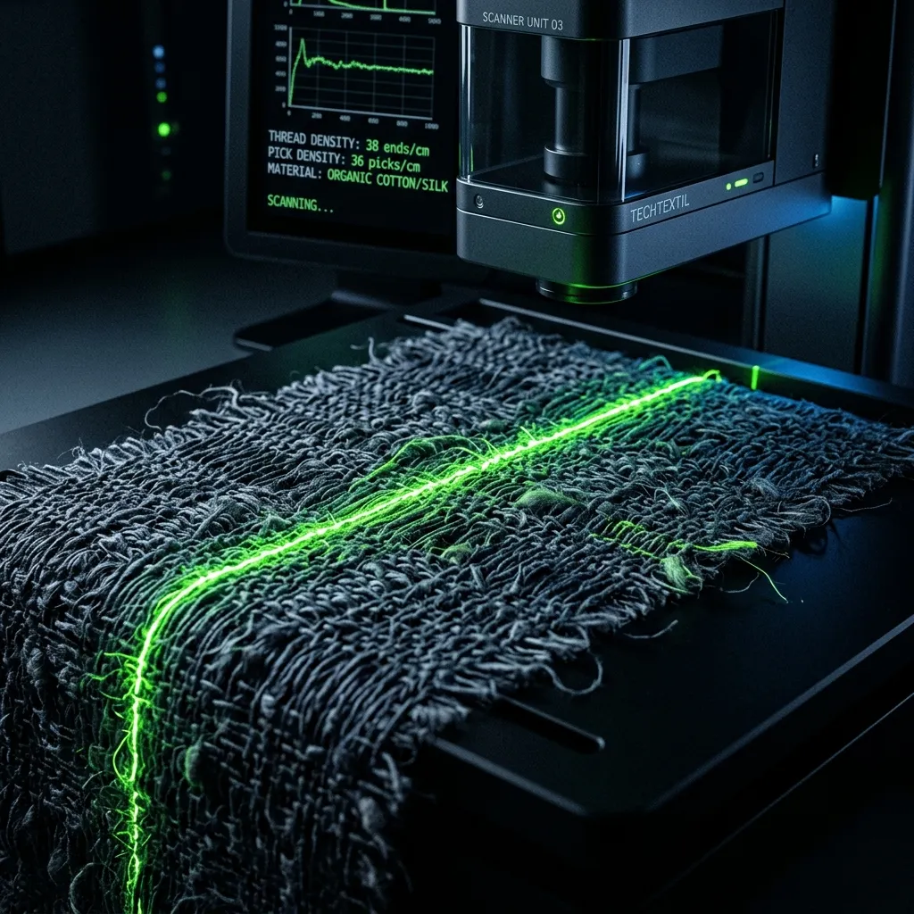
R&D PROCESS FLOWReference Swatch Received → Lab Composition Analysis → Engineered Sample Yarn Spun
Apparel Design & Custom CAD Drafting
Bridging fashion vision and factory capability. Led by our design heads, we translate mood boards and design files into highly precise technical sheets that direct our assembly network with millimeter accuracy.
- Digital range catalog planning and detailed styling revisions.
- Apparel CAD rendering for quick customer reviews.
- Size grading templates setup matching international markets.
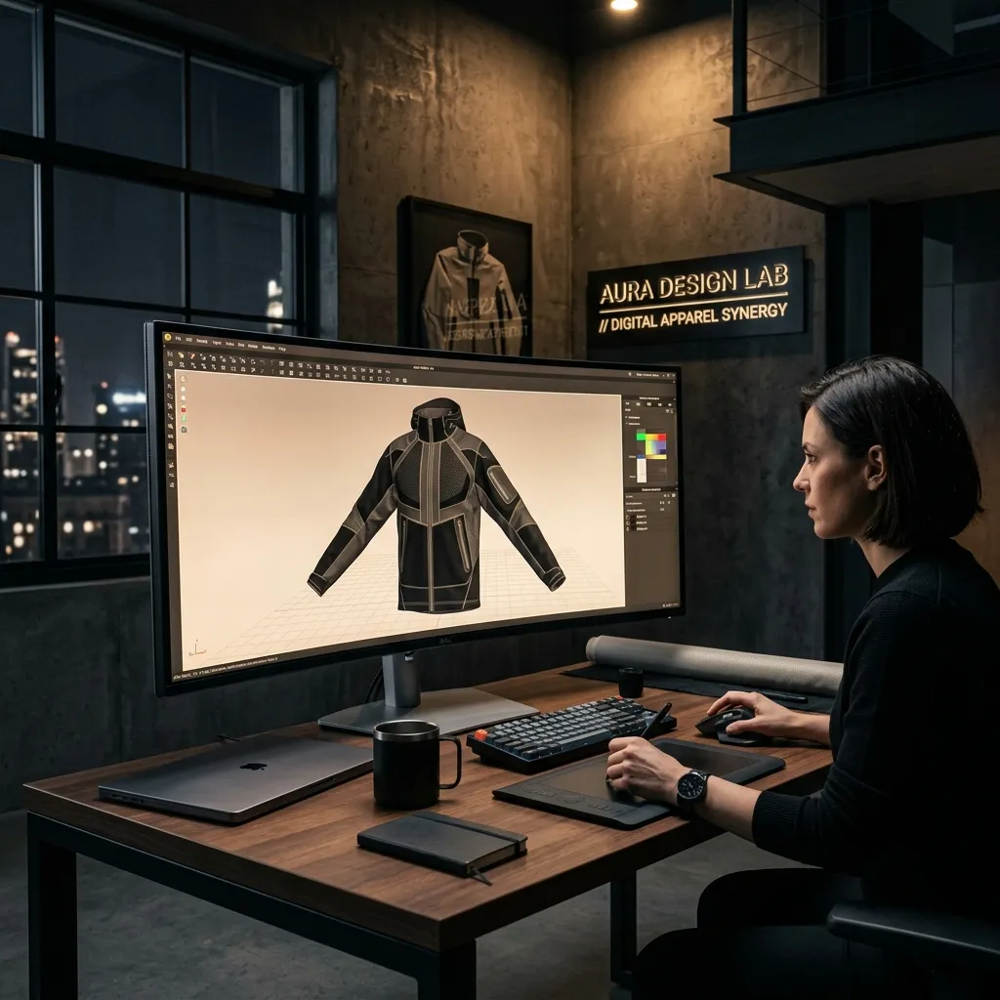
DESIGN PROCESS FLOW2D CAD Tech Pack Setup → 3D Digital Fabric Simulation → Fit-Sample Grade Patterning
Direct Sourcing & Direct Line Quality
Managing the assembly of 28 million garments annually. TØJ Sourcing directly supervises our vetted network of 80+ partner factories, utilizing 100+ QA and operational staff to verify zero tolerance defects.
- Factory capacity booking and scheduling.
- Daily production tracking reports with color-coded timelines.
- In-line and final packaging AQL 1.5 standard inspections.
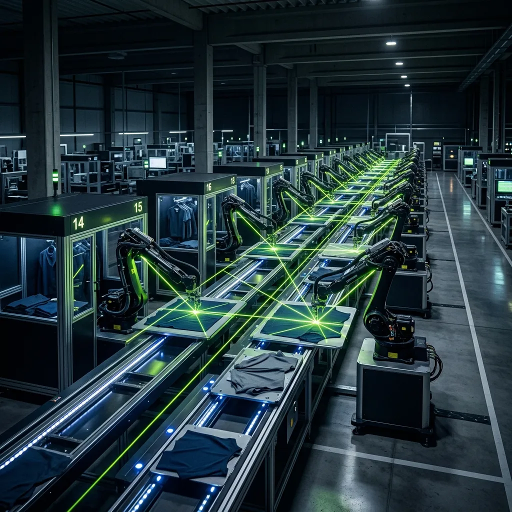
PRODUCTION PROCESS FLOWBulk Raw Yarn Booking → Assembly Line Pilot Run → Final Container AQL Inspection
Ethical Compliance & Custom Shipping
Securing supply chain integrity. We coordinate all container shipments out of Chittagong Port, tracking custom documentation, environmental certificates, GOTS compliance transfers, and global freight parameters.
- Audit updates for partner mills under BSCI and Accord successor codes.
- Custom import clearances tailored for the USA, UK, and European markets.
- Carbon footprint tracking logs per ocean freight container.
Social Compliance Audits → Shipping Booking → Custom Import Clearance Processing
GLOBAL SHELLS
TØJ Sourcing structures supply chain logistics by matching local physical expertise with design-led international shells. Hover and click nodes on the interactive dashboard below to analyze each office shell.
Select a Node
Click any map pointTØJ Sourcing's nodes are fully audited under BSCI, WRAP, and GOTS standards. Select a location on the map to read its specialized role in design, R&D, and factory coordination.
CERTIFICATIONS THAT DEFINE US
GOTS Standard
The Global Organic Textile Standard verifies organic raw cotton paths from harvesting to spinning, knitting, and finished sewing. Ensuring zero toxic pesticides, GMO seeds, or harmful colorants exist in our fabrics.
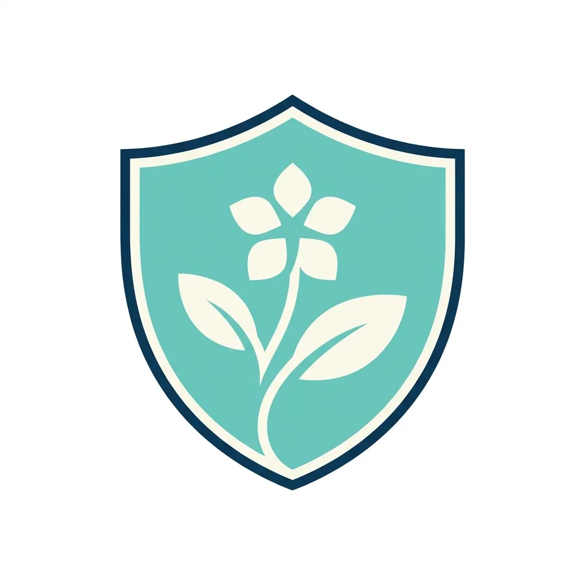
CHEMICAL SAFETY STANDARDOEKO-TEX Standard 100
Verifying that all parts of the garment — including buttons, zippers, linings, sewing threads, and raw fabrics — have been tested for over 100 toxic chemicals, allergens, and skin-sensitizing carcinogens.
RSC (Accord successor)
TØJ factories are fully aligned with the RMG Sustainability Council (RSC) codes. This successor to the original Bangladesh Accord enforces strict electrical infrastructure safety and structural engineering controls.
BSCI & WRAP Codes
Amfori Business Social Compliance Initiative (BSCI) and Worldwide Responsible Accredited Production (WRAP) verify fair wages, zero child labor, safe standard hours, overtime bonuses, and freedom of collective union rights.
RECYCLE • REUSE • REBORN
Post-Industrial Clipping
Pre-consumer raw cutting clippings from our factories are gathered, sorted by color shades, and shredded into pure recycled fiber state, avoiding dye chemicals.
Regenerated Yarn Spinning
Recycled cotton fibers are blended with organic raw virgin GOTS cotton (approx 30/70 blend) to maintain structural yarn length, and spun into durable regenerated yarn.
Eco Garment Assembly
Spun regenerated yarn is knitted, dyed using non-toxic class-I chemicals, cut, and assembled into premium circular outerwear and knitwear collections.
SHOWCASE
Explore finalized style outputs from our divisions, check weight distributions, or view technical composition sheets.
KNITWEAR PORTFOLIO
Precision extra-fine merino wool, Mongolian cashmere, and GOTS organic cotton loopback jersey shells.
WOVEN PORTFOLIO
Premium cotton twill Oxford shirts, organic flax linen utility blouses, and technical micro-grid ripstop shells.
DENIM PORTFOLIO
Heavyweight 14oz selvedge raw indigo denim, ring-spun jeans, and classic western denim shirts.
FABRICS & ACCESSORIES PORTFOLIO
Premium GOTS certified cotton canvas rolls, eco-friendly horn buttons, recycled sewing threads, and high-tensile fasteners.
VETTED PRODUCTION CREDENTIALS // 12 CERTIFIED PARAMETERS
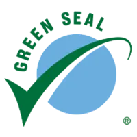
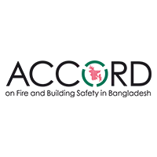
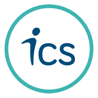
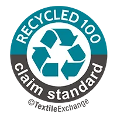
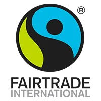

CONTACT HUB
ENCRYPTED SOURCING PIPELINE // GLOBAL INTAKE
Connect directly with our Dhaka accounts team to initiate fabric testing, request 3D sample grading, or receive high-accuracy garment manufacturing price quotes. Submissions are processed and routed in under 4 hours.
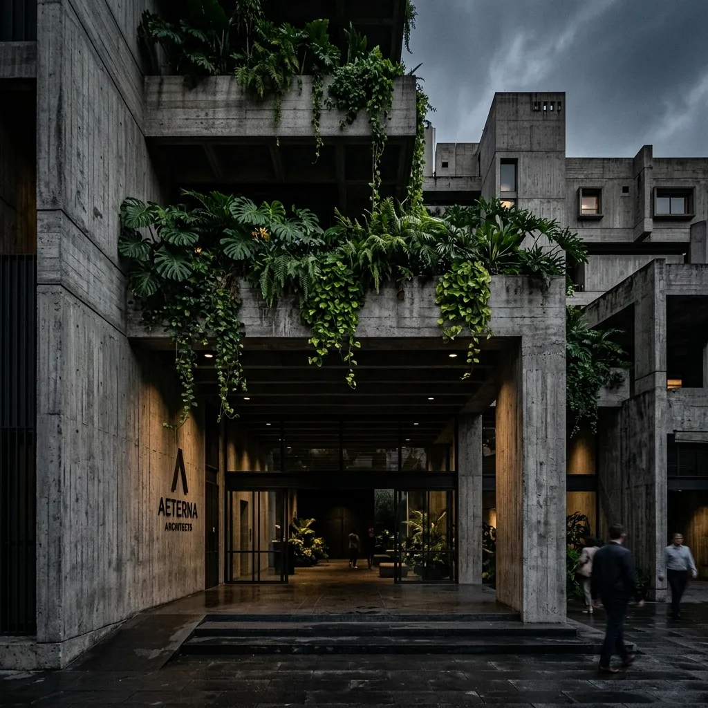
DHAKA (HQ)
House-774, Road-11, Avenue-2,
Mirpur DOHS, Dhaka-1216,
Bangladesh.
Mail: info@tojsourcing.com
Phone: +880 171 460 3626
Hours: 09:00 - 18:00 (GMT+6)
CHINA HUB
Room No. 415 Level 4, Xinjing Business Building,
Sanyuanli Avenue, Baiyun District,
Guangzhou, China.